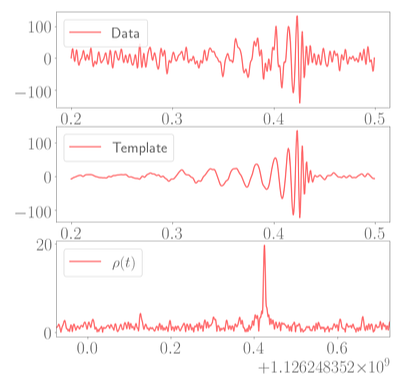
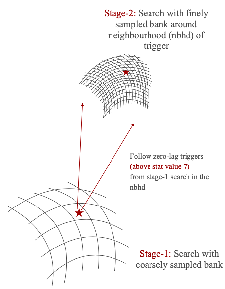
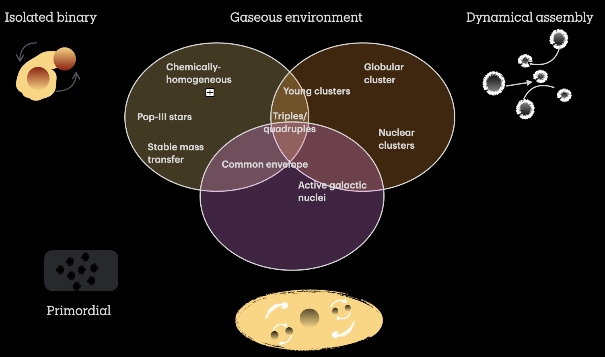
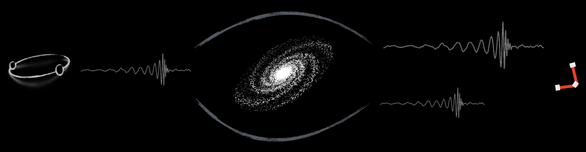
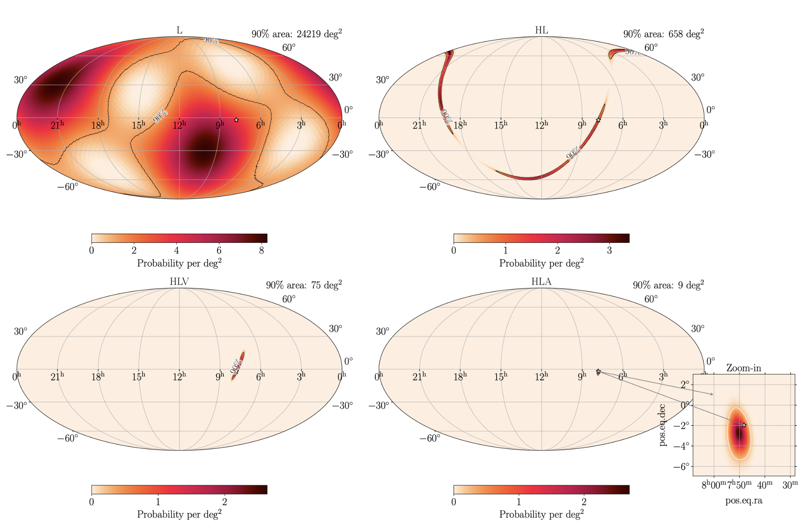

Research
Gravitational wave search from compact binary coalescences
How efficiently can we detect gravitational waves observed compact binary coalescences?
The gravitational wave signals from coalescing binaries leave their tiny imprints on the LIGO-Virgo interferometer's noise which is challenging to detect. These signals, if accurately modeled, can be picked out by matched filtering technique. In matched filtering, the detector's output is correlated with a modeled signal called a template waveform. The modeling of a template depends on several parameters corresponding to individual masses of the compact objects, their component spins, orbital eccentricities, and location with respect to the detector. Since the values of these parameters are a priori unknown, matched filtering-based search pipelines tend to correlate data with a "bank of templates."

One way to reduce the computation cost of matched filtering is by performing it in multiple stages using multiple banks. Consider matched filtering of coarsely sampled data with a less dense bank called a coarse bank. The GW candidates identified in this step will have fewer SNRs, which can be improved if a finer search is performed in the signal's parameter space neighborhood. The finer search in the neighborhood will use few templates and, therefore, will effectively reduce the total matched filter cost.

Publications
- Kanchan Soni, Alexander H. Nitz, Hierarchical searches for subsolar-mass binaries, ApJ 978 69 (2024) [arXiv:2409.11317]
- Kanchan Soni, S. Mitra, S. Dhurandhar, Statistical significance of GW signals in hierarchical search, Phys. Rev. D 109 (2024) [arXiv:2309.00019]
Primordial black holes
How Do Compact Binaries Come Together?

Can Gravity Bend a Wave? Hunting Lensed Gravitational Signals

Lights, Waves, Action! Exploring the Multimessenger Universe
